Theme Settings¶
Theme Settings or Theme Editor is a graphical user interface, lets you configure all features which the theme supports.
To open Theme Editor, go to your admin page > Storefront Design > My Themes, on the Current Theme section, click Customize button:
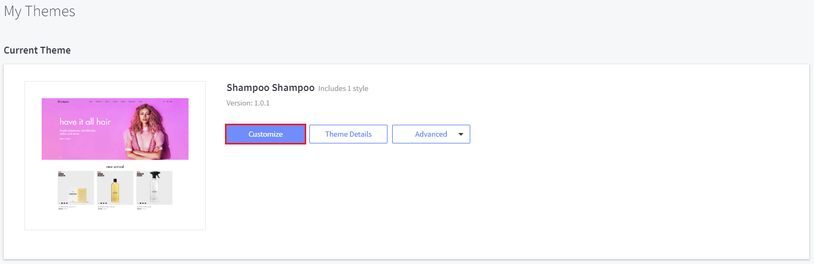
Styles¶
This section shows all the theme's variations. You can change other style here.
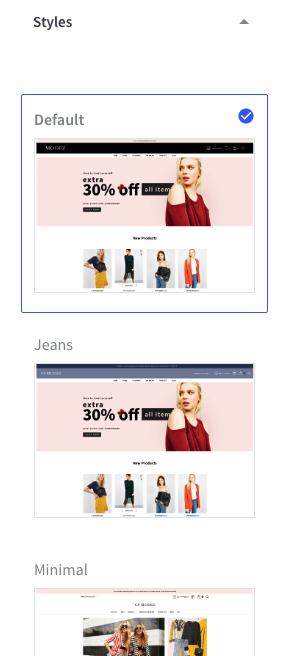
Global¶
This section lets you change colors of common elements, load indicator and overlays.
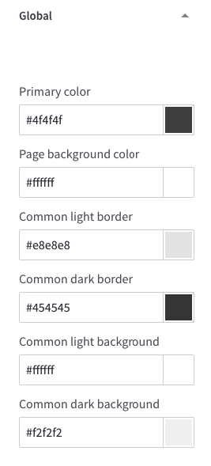 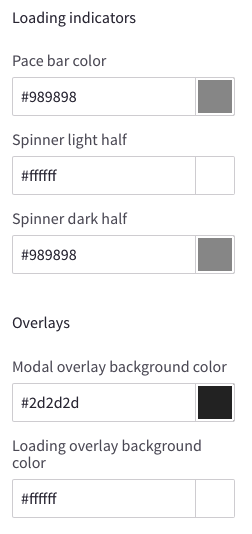
Typography & Icons¶
This section lets you change fonts, font sizes, colors of the logo, body text, headings, links, icons, ratings and other common elements.
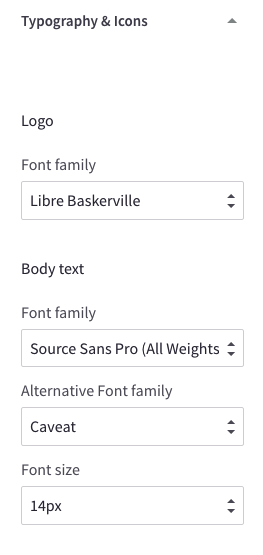
 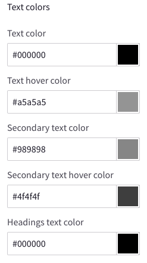
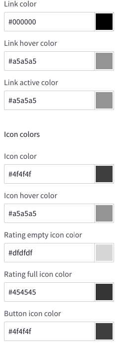
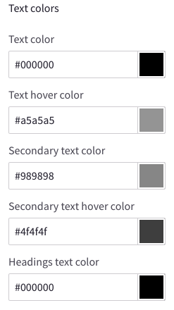
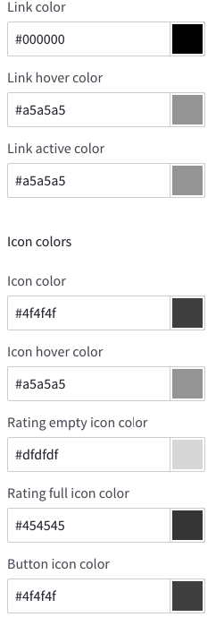
Buttons¶
This section lets you change colors of buttons.
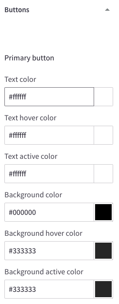 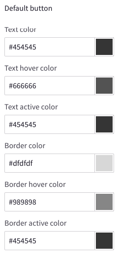 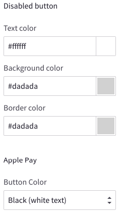
Forms¶
This section lets you change colors, borders, background of the form elements like labels, input boxes, select boxes, checkbox and radios.
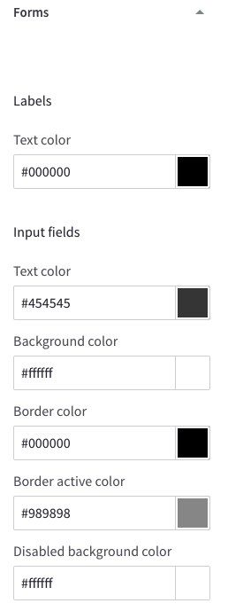 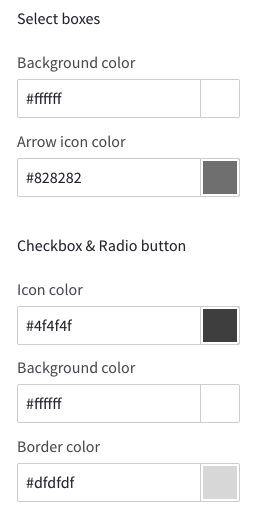
Top Banner¶
This section lets you change colors of the top banner and the bottom banner.

Header¶
- This section let you configure colors of the elements showing on the page header.
- Show/Hide page links on the Main Menu.

Logo¶
This section lets you configure logo position and size.
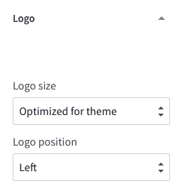
Carousel¶
This configuration allow you:
- Show/hide the main slideshow on homepage.
- On/off allowing image to stretch on large screens.
- Change colors of all carousel's elements.
- Change position of the main slideshow's description box to left, right or center.
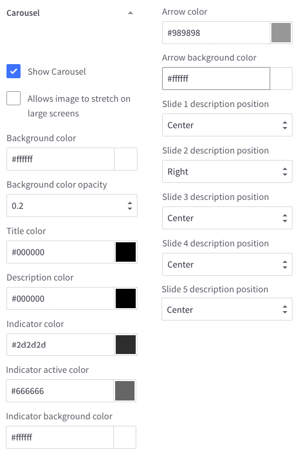
Payment Icons¶
This section lets you toggle payment icons to show/hide on the footer.

Social Media Icons¶
This section lets you configure position of the social icons on footer or header.

Products¶
This configuration section lets you:
- Show/Hide Quickview button.
- Configure number of products, reviews, brands, search results showing.
- Configure product image sizes
- Configure Product swatch image sizes.
- Configure position and colors of Product Badges.
- Configure colors of elements of products grid items.

Blog¶
This section lets you configure blog post image sizes.
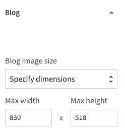
Footer¶
This configuration let you:
- Show/Hide "Powered By..." text at the footer.
- Show/Hide copyright text.
- Change colors of the footer background, newsletter section, copyright section.
- Show/Hide GeoTrust SSL seal and configure seal size.
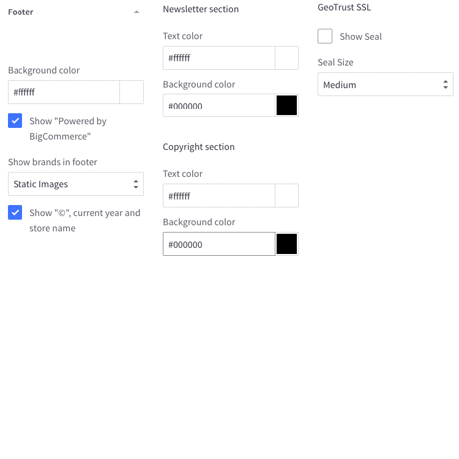
Purchase Options¶
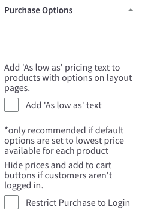
Homepage¶
This section let you configure the homepage:
- Show/hide any content blocks and product blocks.
- Rearrange position of any blocks.
- Configure display type of New, Featured, Popular Products blog.
- Number of products to show on each block.
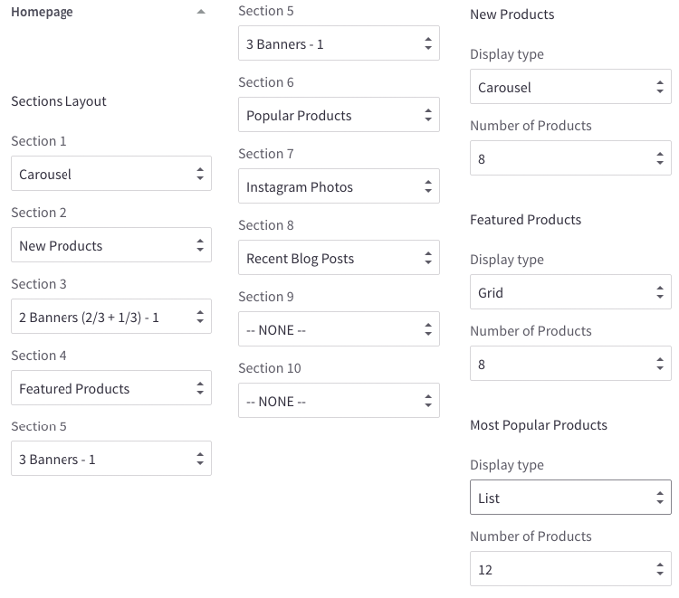